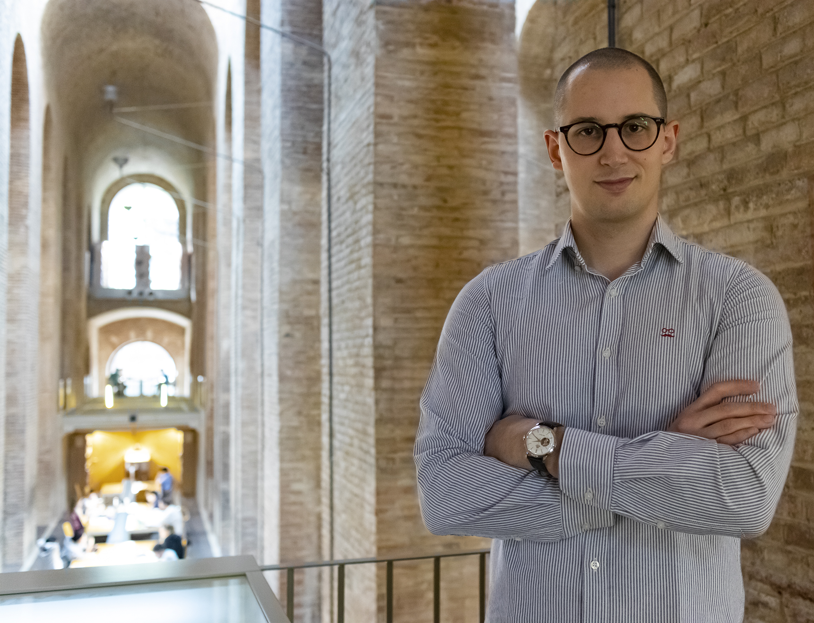

I hold a Ph.D. in NeuroRobotics from the Donders Institute for Brain, Cognition, and Behaviour at Radboud University (Nijmegen, Netherlands). My research is driven by a core conviction: Intelligence is the byproduct of pursuing survival in a complex world where self-regulation and self-maintenance are constantly challenged. Agents that persist, adapt, and act purposefully do so because they regulate their own internal needs, not because an external designer defined their objectives. Understanding and modeling this process is, I believe, the most promising path toward truly embodied artificial intelligence.
To explore this, I follow a convergent synthetic methodology, designing biologically constrained computational models and embedding them in physical robots to test the behaviors that intelligence models generate. This is the approach I pursued across my PhD thesis, "Autonomy of the Artificial: A NeuroRobotic Approach to Intrinsically Motivated Agents", defended in June 2026. The work produced four key contributions: a Neural Mass Allostatic Model replicating hypothalamic dynamics for multi-need orchestration, the Motivational Hippocampal Autoencoder (MoHA) for generating motivationally modulated cognitive maps, an integration of MoHA with Sequential Episodic Control to achieve motivationally driven multi-objective reinforcement learning, and a Hippocampal-VTA architecture for curiosity-driven exploration.
These principles extend well beyond the lab. Across four EU-funded projects, I applied self-regulation to industrial, clinical, and social robotics contexts. In HR-Recycler, collaborative robots disassembling electronic waste modulate their behavior in real time according to workers' psychological state and interaction preferences. In ReHyb, a self-regulatory cognitive architecture personalizes neurorehabilitation for stroke patients, coordinating a serious game, an exoskeleton, and functional electrostimulation to match the user's current cognitive and physical condition. In socSMCs, I explored how social sensorimotor contingencies shape humanoid robot behavior in human interaction. Most recently, in CAVAA, I contributed to modeling artificial awareness by endowing artificial systems with motivational states, hippocampal representations of those states, and the computational basis to form and bias a world model toward motivationally relevant experience.
My path into this field reflects a deliberate progression toward understanding embodied intelligence. I started with Psychology at the University of Granada, where working with the Grounded Cognition Lab under Julio Santiago gave me a grounding in intelligence theory and its cognitive underpinnings. My bachelor's thesis, "Can our focus on the past put it in front of us?", was awarded the Best Bachelor's Thesis prize by the Official College of Psychology of Eastern Andalusia. From there I sought the neural basis of intelligent computation, completing the Master in Cognitive Systems and Interactive Media at Pompeu Fabra University in Barcelona. There I joined the SPECS Lab, first as a research assistant and later as a predoctoral researcher, encountering the interdisciplinary culture that has shaped my scientific identity ever since. Robotics became the necessary third pillar: the tool for actually testing whether the intelligence models I build generate the behaviors they predict.
My work bridges neuroscience, robotics, and artificial intelligence to build autonomous systems capable of self-regulation, adaptation, and learning. I am now seeking to extend this research further, both within academia and in collaboration with industry partners developing intelligent systems that are technically robust and ethically grounded. I believe combining scientific insight with real-world application is key to shaping the future of meaningful and trustworthy intelligent robotics.
© oscarguerrerorosado.github.io. All Rights Reserved.